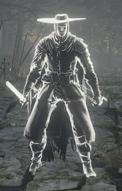

|  |
Black Hand GotthardGotthard, one of king's Black Hand, who fled the castle. A hunter who served several kings of Lothric. He held the title of "Black Hand", a title that is only bestowed upon hunters that serve successive kings. To date, only three have obtained this title (Black Hand Kamui is one and the other is unknown). |